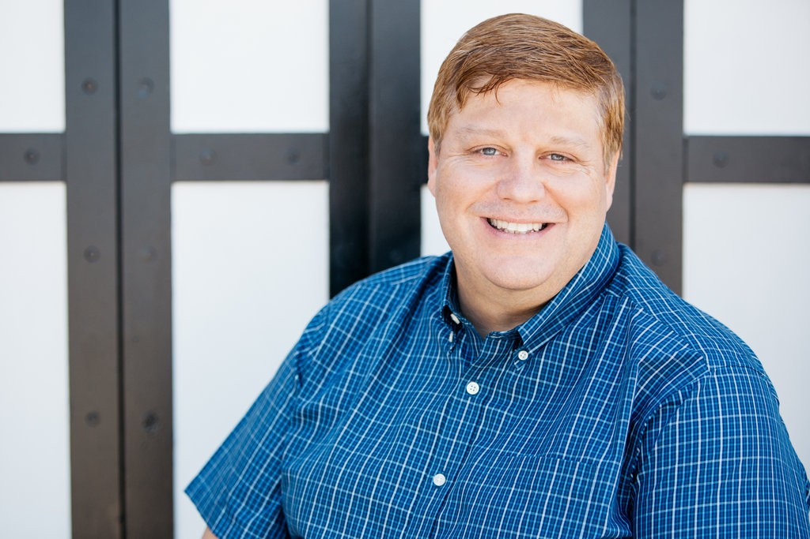

All About Rob

Rob Ross has been working in the I.T. industry for more than 35 years. As a serial entrepreneur Rob formed his first business importing and assembling computers from Taiwan at just 15 years old. In 1982 Rob founded Integral Networking Corporation a company that became the Sacramento region’s largest network systems integrator. After growing Integral Networking for 16 years, Rob merged Think Smart with CRL Network Services where he held the position of President of Technical Services. Serving on the executive management team, Rob worked directly with underwriters Morgan Stanley, Lehman Brothers, and CIBC Oppenheimer to complete the CRL IPO in early 1999. In early 2000 Rob founded his current company Think Smart Inc. a cloud hosting provider servicing the healthcare industry where he continues to serve as President.
Rob, a self-described “compulsive volunteer” firmly believes in giving back to his community and worthwhile charities. Rob’s most recent volunteer work includes: Chairman - City of Folsom Parks and Recreation Commission, Board Member - Folsom Economic Development Corp (FEDCorp), Rotarian – Folsom Rotary Club, Founding Member – Folsom Community Service Day, Steering Committee Member – Folsom Healthy Halloween, Folsom River District Committee Member, among Many others. Rob is an active private pilot and has donated his services volunteering with Angel Flights™ transporting medical patients to hospitals where vehicle use is too slow.
He has lived in Folsom for more than 16 years with his wife Christie . He has a daughter Kelsey that is a senior at Oregon State University where she is completing a degree in Biological Anthropology with a minor emphesis in Chemistry. Rob is Currently attending the UC Davis Coding Bootcamp and his work can be seen here Github Repository.